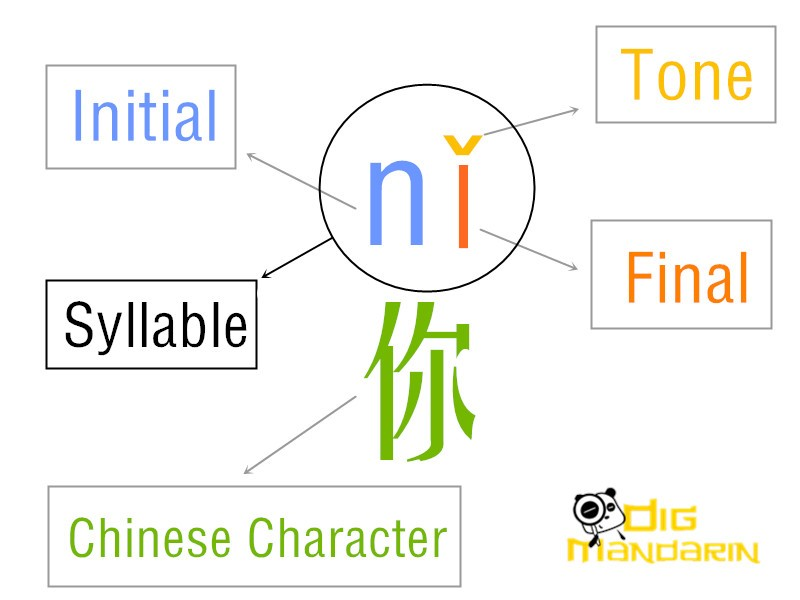
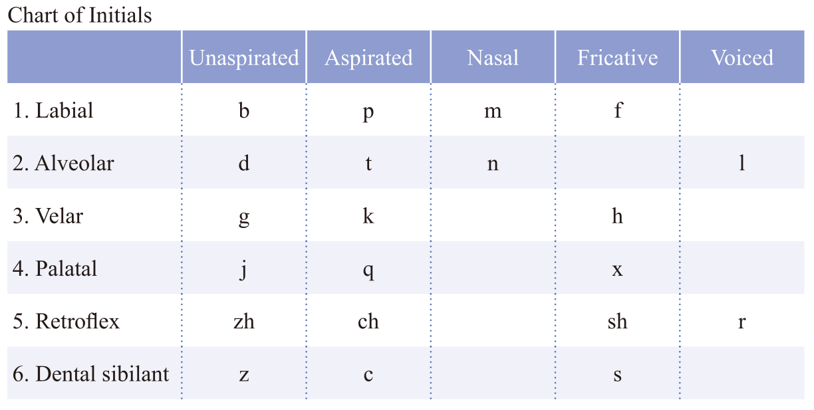
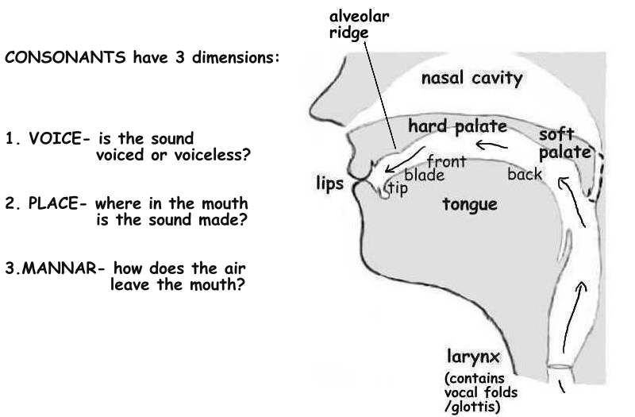
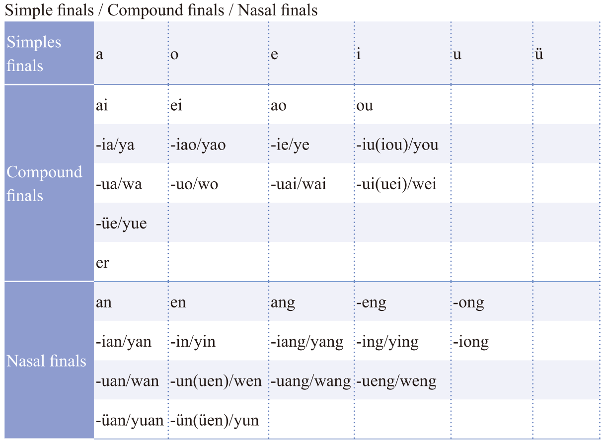
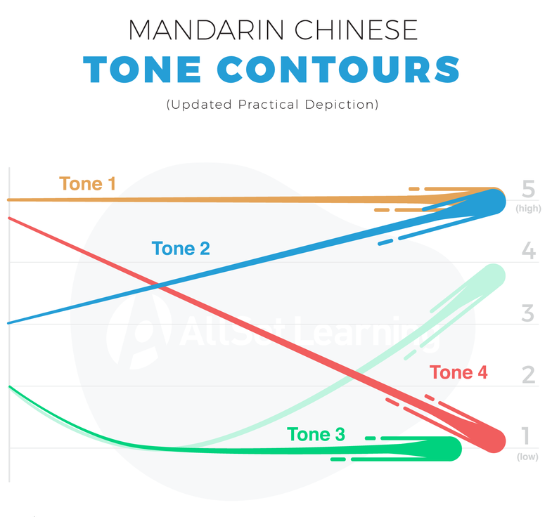

Mandarin Supplement Information
Last updated: 2026-09-30
Pronunciation
Initial, final, and tone
In Mandarin, a syllable is usually composed of an initial sound, a final sound, and a tone. For some syllables, only a final sound and a tone are necessary. Each spoken syllable corresponds to a written Chinese character. A Chinese word can be monosyllabic (and thus one Chinese character) or multi-syllabic (and multiple Chinese characters).

Initial sounds
Video explanation of all initial sounds (aka consonants).
Text explanation of all initial sounds.
Labial initial sounds: b, p, m, f
These initial sounds uses your lips for pronunciation.Alveolar initial sounds: d, t, n, l
The tip of your tongue should briefly touch the alveolar ridge.


Final sounds
Video explanation of simple final sounds (aka vowels).

Tones
In Mandarin, there are four different tones and a neutral tone (or toneless).
First tone: high and leveled tone. Accent mark ˉ.
Second tone: rising tone. Accent mark ˊ.
Third tone: falling and rising tone (when the syllable is pronounced by itself) or low tone (when in a sentence). Accent mark ˇ.
Fourth tone: sharp falling tone. Accent mark ˋ.
Fifth neutral tone: short and light sound, rather than a pitch difference.

Video explanation and practice:
- Mandarin tones: https://www.youtube.com/watch?v=n_Cj3aOSI1w
- Mandarin tones listening practice: https://www.youtube.com/watch?v=5oDbcbyx7sk
Pinyin conventions
The tone mark is always above a vowel for each syllable. For syllables with more than one vowel, the priority is: a > o > e > i > u > ü. An exception is when i and u are together, and the tone mark is above the vowel at the end.
Separate each Chinese words with a space.
Capitalize proper nouns.
Use English punctuation.
For more details, see these two articles:
Pinyin chart
Yoyo Chinese interactive pinyin chart: https://yoyochinese.com/chinese-learning-tools/Mandarin-Chinese-pronunciation-lesson/pinyin-chart-table
Clicking on each pinyin syllable in the table will show the audio pronunciation for each of the four main tones.The full pinyin chart can also be found in Let’s Learn Mandarin 1 Textbook, pages 174-177.
Tone changes (aka tone sandhi)
There are three common cases where the tone will change for a syllable in Mandarin.
1. Two consecutive third-tone syllables: the first third tone is pronounced as a second tone. However, the pinyin is still often written as third tone.
e.g. nǐ hǎo (hello) should be pronounced as ní hǎo (but still written as nǐ hǎo).
2. The word “one”, 一 yī, has multiple tone changes, and often the pinyin will also be changed to reflect the tone change:
a. Ordinals, phone numbers, address, numbers in a series: pronounced as first tone yī.
e.g. 第一個 dì yī ge (the first one).b. 一 yī is the last syllable of a word: pronounced as first tone yī.
e.g. 唯一 wéi yī (“only one”).c. 一 yī is before a first, second, or third tone syllable: pronounced as fourth tone yì.
e.g. 一點 yì diǎn (“a little bit”).d. 一 yī is before a fourth tone syllable: pronounced as second tone yí.
e.g. 一定 yí dìng (“definitely”).
Note that the when saying 一 yī followed by the measure word ge 個 (e.g. yí ge rén, “one person”), it is also pronounced as second tone (yí ge), because ge 個 is actually pronounced as fourth tone when isolated.
3. The word “no” or “not”, 不 bù, has one tone change and often the pinyin will also be changed to reflect the tone change:
a. 不 bù is before a fourth tone syllable: pronounced as second tone bú.
e.g. 不是 bú shì (“is not”).b. Pronounced as fourth tone bù in all other cases.
For more details and examples on tone changes, see this video or article.